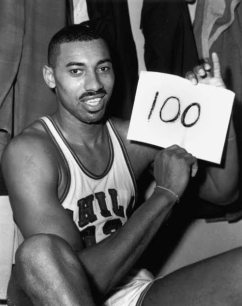
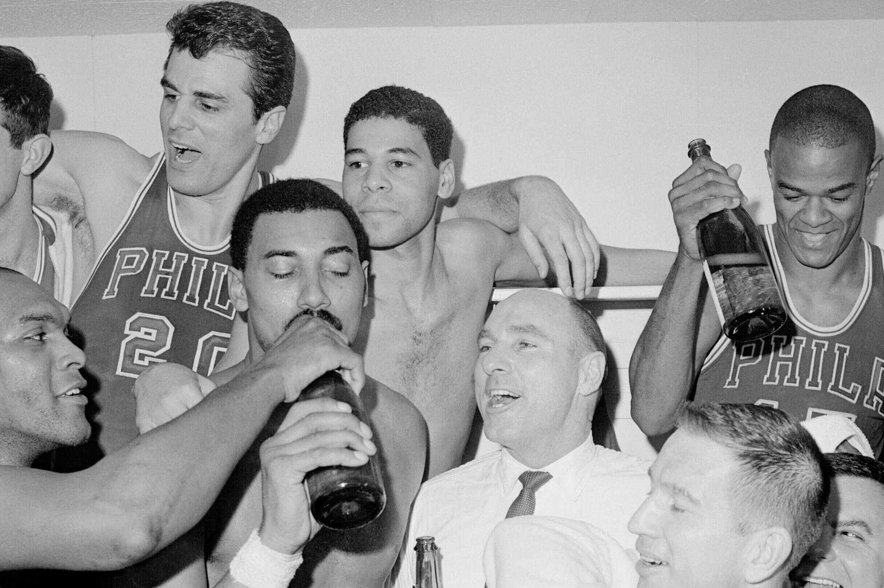

Wilt Chamberlain
 Wilt Chamberlain played from 1959 to 1972. In that time period, he amassed Career Achievements:
Career Achievements:
- NBA Championships: 2 (1967, 1972)
- NBA Most Valuable Player (MVP) Awards: 4 (1960, 1966, 1967, 1968)
- NBA All-Star Appearances: 13 (1960–1969, 1971–1973)
- NBA All-Star Game MVP: 1 (1960)
- NBA Scoring Titles: 7 (1960–1966)
- NBA Rebounding Titles: 11 (1960–1969)
- NBA Assists Leader: 1 (1968)
All-Time Rankings:
- Points: 31,419 (7th All-Time) – 30.1 PPG
- Rebounds: 23,924 (1st All-Time) – 22.9 RPG
- Assists: 4,643 (34th All-Time) – 4.4 APG
- Field Goals Made: 12,681 (5th All-Time)
- Field Goal Percentage: 54.0% (3rd All-Time among players with significant volume)
- Minutes Played: 47,859 (7th All-Time)
- Free Throw Percentage: 51.1%
Single-Game Records:
- Most Points in a Game: 100 (March 2, 1962, against the New York Knicks)
- Most Points in a Quarter: 31 (Tied with others)
- Most Points in a Half: 59 (Still the record)
- Most Rebounds in a Game: 55 (Still the record)
Notable Career Feats:
- Highest Scoring Average in a Season: 50.4 PPG (1961-62) – *Highest in NBA history*
- Highest Rebounding Average in a Season: 27.2 RPG (1960-61) – *Still the highest single-season rebounding average*
- Only player to average 30+ points and 20+ rebounds in a season (7 times)
Hall of Fame Induction:
- 1978: Wilt Chamberlain was inducted into the Naismith Memorial Basketball Hall of Fame